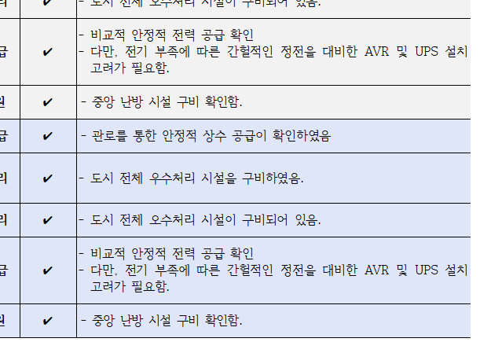
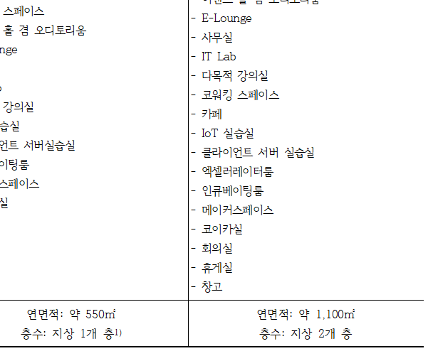

IT Infratuzilmasi
Kashqadaryo va Qoraqalpog'istondagi yoshlar uchun standart raqamli infratuzilmani yaratish
Ushbu loyiha Qashqadaryo viloyati va Qoraqalpog'iston Respublikasining 16 ta tumanida KOICA yoshlar raqamli texnologiyalar o'quv markazlarini qurish va jihozlashni nazarda tutadi. Biz mavjud binolarni ta'mirlaymiz va yangi maktablar quramiz.
Raqamli o'quv markazlari qurilishi rejasi va arxitektura tahlili (Noyabr 2025)
Loyiha doirasida jami $4.3 mln AQSh dollari (taxminan 5.9 mlrd KRW) byudjet bilan **2 ta Hub-tipli o'quv markazini rekonstruksiya qilish** va **14 ta Local-tipli o'quv markazini (IT Villages) yangi qurish** amalga oshiriladi. Quyida 2025-yil noyabr oyida o'tkazilgan 1-arxitektura tahlili natijasi keltirilgan:
| Turkum | Ijro rejasi (Yanvar 2025) | Arxitektura tahlili ver. 1 (Noyabr 2025) |
|---|---|---|
| Loyiha hududi (Koordinatalar / Maydon) |
Ma'lumot yo'q |
• Nukus Hub (H-turi): Nukus IT Park binosi ichida, ~550㎡ (42°45'86.9"N, 59°61'44.0"E) • Qarshi Hub (H-turi): Qarshi IT Park binosi ichida, ~1,100㎡ (38°83'80.0"N, 65°78'49.9"E) • Local (L-turi) 14 ta hudud: Ma'lumot yo'q (hudud tanlash jarayoni davom etmoqda) |
| Bino maqsadi | Ma'lumot yo'q | Ta'lim infratuzilmasi, karyera va startapni qo'llab-quvvatlash hamda ma'muriy xonalar |
| Qurilish usuli | Ma'lumot yo'q |
• H-turi Hub (2 ta): Bino ichki qismini rekonstruksiya qilish (Remodeling) • L-turi Village (14 ta): Yangi qurilish (1 qavatli bino) |
| Loyiha hajmi | Ma'lumot yo'q | Raqamli texnologiyalar o'quv markazlari (2 ta Hub, 14 ta Local) |
| Qurilish o'lchami (Maydon / Qavatlar) |
Ma'lumot yo'q |
• Nukus Hub: 1 qavat rekonstruksiya (Umumiy maydon ~550㎡) • Qarshi Hub: 2 qavat rekonstruksiya (Umumiy maydon ~1,100㎡) • L-turi Village: 1 qavatli yangi bino (Umumiy maydon har biri ~525㎡) |
| Qurilish xarajatlari | - | $4.3 Million USD (USD 4,300,000) |
| Muddatlar | Ma'lumot yo'q |
• Loyiha dizayni: 26.10 ~ 27.12 (14 oy) • Qurilish bosqichi: 27.07 ~ 28.12 (18 oy) |
📍 KOICA Al-khwarizmi Hub (H-turi) Joylashuvi va Infratuzilma holati

1. Nukus Hub (Qoraqalpog'iston Respublikasi)
| Manzil / Koord | Nukus IT Park binosi ichida (42°45'86.9"N, 59°61'44.0"E) |
| Poytaxtdan masofa | ~810km to'g'ri chiziq masofa (Aviaparvoz orqali ~1 soat 50 daqiqa / Avtomobil yo'li orqali ~16 soat (~1,100km)) |
| Infratuzilma |
Suv ta'minoti (Tasdiqlandi), Yomg'ir oqava tizimi (Jihozlandi), Kanalizatsiya (Jihozlandi), Isitish (Markaziy isitish, Tasdiqlandi) Elektr ta'minoti: Nisbatan barqaror, ammo hududdagi vaqtinchalik uzilishlarga qarshi AVR va UPS o'rnatish choralari ko'rilishi zarur. |

2. Qarshi Hub (Qashqadaryo viloyati)
| Manzil / Koord | Qarshi IT Park binosi ichida (38°83'80.0"N, 65°78'49.9"E) |
| Poytaxtdan masofa | ~400km to'g'ri chiziq masofa (Aviaparvoz orqali ~50 daqiqa / Afrosiyob tezyurar poyezdi orqali ~3 soat 40 daqiqa) |
| Infratuzilma |
Suv ta'minoti (Tasdiqlandi), Yomg'ir oqava tizimi (Jihozlandi), Kanalizatsiya (Jihozlandi), Isitish (Markaziy isitish, Tasdiqlandi) Elektr ta'minoti: Nisbatan barqaror, ammo hududdagi vaqtinchalik uzilishlarga qarshi AVR va UPS o'rnatish choralari ko'rilishi zarur. |
Nukus va Qarshi shaharlarida barpo etiladigan H-tipli Hub markazlarining binolari bo'yicha kelishuvlar yakunlandi. Biroq, tumanlarda yangidan quriladigan 14 ta KOICA IT Village (L-turi) o'quv markazlarining yer maydoni Raqamli texnologiyalar vazirligi (sherik tashkilot) tomonidan hali to'liq yakunlanmagan. Shu sababli kelajakda ushbu 14 ta hududning aniq koordinatalari va infratuzilmasini o'rganish bo'yicha qo'shimcha tadqiqot ishlari olib boriladi.
Standart IT uskunalari paketlari (H-turi 17 xil / L-turi 8 xil)
3 726.0 mln KRW (2,7 mln AQSh dollari) byudjet doirasida o'quv markazlari o'lchamlariga mos ravishda IT uskunalari xarid qilinadi. Uskunalar dasturlash va ma'lumotlarni tahlil qilish uchun mos keladigan yuqori quvvatli apparatlardan iborat.
🌟 Hub-tipli Uskunalar Paketi (17 xil)
- • Kuchli multimedia dizayn kompyuterlari
- • Taqdimot va ma'ruza noutbuklari
- • 75-dyuymli katta elektron aqlli doskalar
- • Tarmoq serverlari (NAS) va server rack tizimlari
- • Uzluksiz elektr quvvati manbalari (UPS)
- • 3D printerlar va dasturlash kitlari
🌱 Local-tipli Uskunalar Paketi (8 xil)
- • Noutbuklar (kodlash va darslar uchun)
- • Proektorlar va ma'ruza ekranlari
- • Wi-Fi AP va tarmoq svichlari
- • Ko'p funksiyali printerlar va sarf materiallari
- • Elektr kuchlanishini himoya qiluvchi regulyatorlar
- • Boshlang'ich kodlash kitlari va mikrokontrollerlar